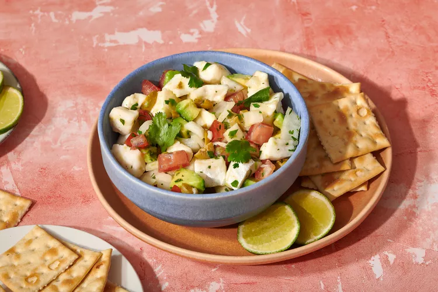

How To Make Ceviche at Home

Description
Ceviche is a delicious Peruvian dish that is can be served as an appetizer or a full meal. It is generally made from raw fresh fish or shrimp. The fish or shrimp marinates in lemon and/or lime citrus juices. The acidity in the citrus cures the fish causing it to become firm and opaque while absorbing flavor.
Ingredients
- 1 lb. fresh skinless ocean fish fillets of your choice, cut into 1/2-inch dices
- 1 1/2 cups fresh lime juice (or lemon juice)
- 1 medium white onion, chopped into 1/2-inch pieces
- 2 medium-large tomatoes, chopped into 1/2-inch pieces
- 2 to 3 serranos (stemmed, seeded, and finely chopped)
- 1/3 cup chopped cilantro
- 1/3 cup chopped pitted green olives
- 1 to 2 tablespoons extra-virgin olive oil (optional)
- Kosher salt
- 3 tablespoons fresh orange juice OR 1/2 teaspoon sugar
- 1 large (or 2 small) ripe avocados (peeled, pitted, and diced)
- Tostadas (or whatever you prefer) for serving
Recipe Instructions
- Gather ingredients in a easy to reach area.
- In a 1 1/2-quart glass or stainless steel bowl, combine the fish, lime juice, and onion. Use enough juice to cover the fish and allow it to float freely; too little juice means unevenly "cooked" fish. Cover and refrigerate for about 4 hours, until a cube of fish no longer looks raw when broken open. Drain in a colander.
- In a large bowl, mix together the tomatoes, green chiles, cilantro, olives, and optional olive oil. Stir in the fish and season with salt, usually about 1/2 teaspoon. Add the orange juice or sugar. Cover and refrigerate if not serving immediately.
- Just before serving, gently stir in the diced avocado.
Recipe is courtesy of Rick Bayless
Back to Homepage